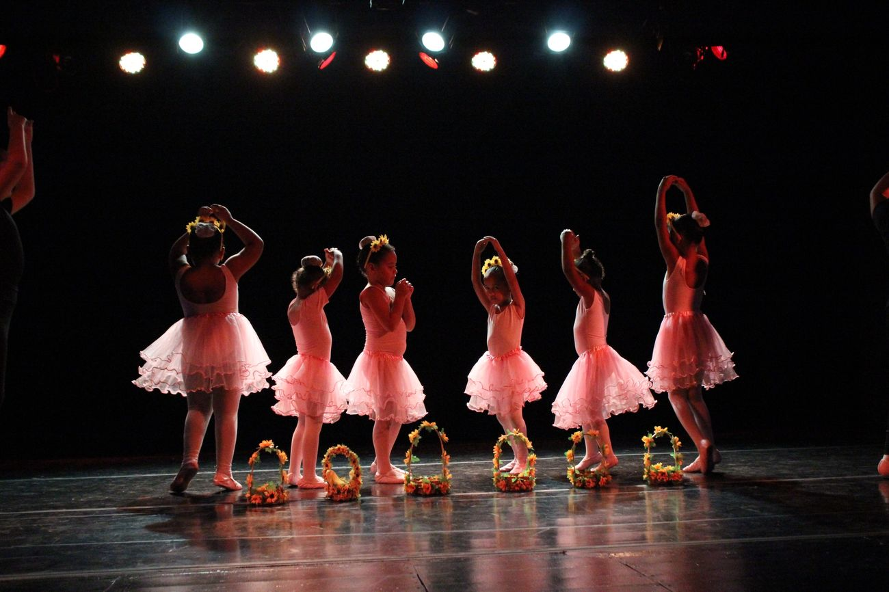

· Evento · Sede Vila Matias
1ª Quermesse Beneficente reúne o bairro na sede
Comidas típicas, brincadeiras e apresentações das oficinas. Toda a renda foi para as cestas da Feirinha da Criança e para a reforma da sala de reforço escolar.

No sábado, 23 de agosto, a sede da Frutos do Amanhã virou arraiá. A primeira Quermesse Beneficente da ONG juntou famílias atendidas, vizinhos e voluntários num pátio com barracas de comida, brincadeiras e apresentações das turmas de dança e música.
A ideia nasceu nas oficinas: as crianças queriam mostrar o que ensaiaram durante o ano, e a equipe aproveitou para transformar a apresentação em arrecadação. Os pratos foram preparados pelas mães que participam dos cursos de geração de renda.
Toda a renda foi dividida entre duas frentes: a compra de alimentos para as cestas da Feirinha da Criança e a reforma da sala de reforço escolar, que precisava de pintura e de mesas novas.
A quermesse deve virar evento anual. Quem quiser ajudar na próxima edição pode se candidatar como voluntário pelo site.